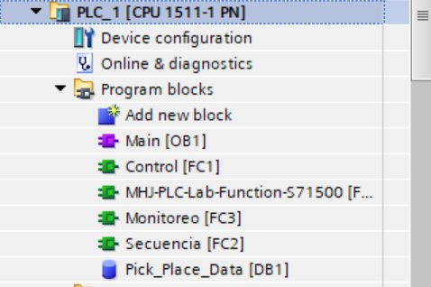
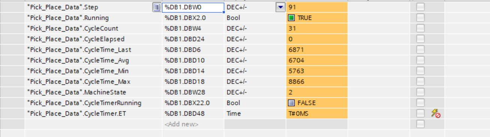
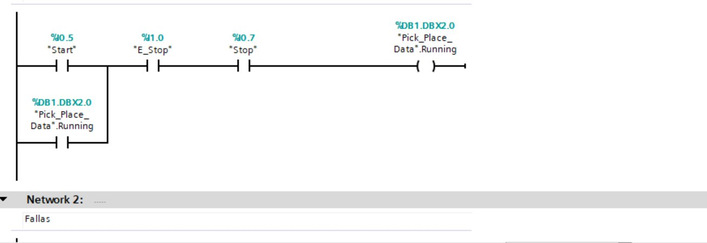
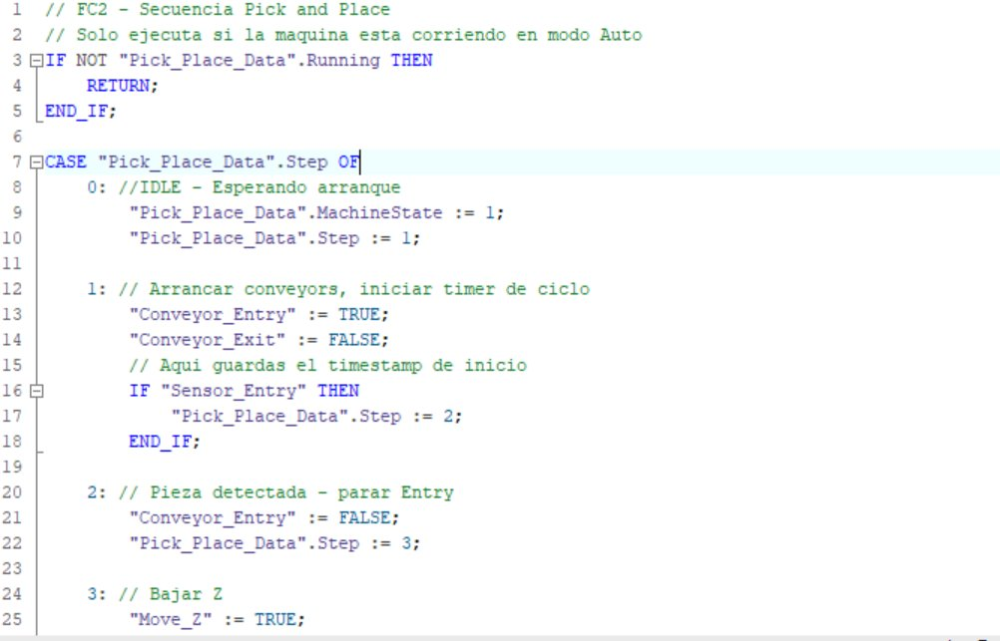

Pick & Place — PLC Control & Production Monitoring
Fully programmed Pick & Place system with real-time production monitoring, built from scratch using TIA Portal V17, PLCSIM (S7-1500), and Factory I/O. Designed to demonstrate end-to-end PLC programming skills — from safety logic to sequence control to production analytics.





The Problem
In manufacturing lines with robotic pick-and-place systems, unplanned downtime is one of the most costly issues. Cycle time degradation — when a machine gradually slows down — often goes unnoticed until a full stop occurs. By the time maintenance is called, production has already been lost.
The Solution
A complete PLC program that controls a Pick & Place cartesian robot and simultaneously monitors production KPIs in real time. The system measures every cycle, tracks statistical trends (average, min, max), and lays the groundwork for early degradation detection.
Program Structure
Sequence Logic — FC2
The sequence is implemented as a CASE state machine in SCL. Each step controls physical outputs and waits for the appropriate sensor feedback before advancing. Motion axes use a two-phase pattern to avoid false transitions within the same scan cycle.
| Step | Action | Transition |
|---|---|---|
| 0 | Idle — waiting | Running = TRUE |
| 1 | Start entry conveyor | Sensor_Entry = TRUE |
| 2 | Stop entry conveyor | Immediate |
| 3 / 31 | Lower Z axis | Moving_Z start → end |
| 4 | Activate gripper | Item_Detected = TRUE |
| 5 / 51 | Raise Z axis | Moving_Z start → end |
| 6 / 61 | Move X to exit position | Moving_X start → end |
| 7 / 71 | Lower Z at exit | Moving_Z start → end |
| 8 | Release gripper + raise Z | Item_Detected = FALSE |
| 9 / 91 | Return to home | All axes stopped |
Production Monitoring — FC3
Every completed cycle is measured using a TON timer as a stopwatch. FC3 computes a running average and tracks min/max cycle times — giving a real-time baseline for detecting performance degradation before it causes downtime.
Key Technical Decisions
- Two-phase motion pattern: Factory I/O axis signals are TRUE during motion, requiring a start-detection sub-step before the completion check — prevents same-scan false transitions
- Separate safety layer: FC1 handles all safety independently from the sequence. If FC2 has a bug, FC1 still forces all outputs OFF on emergency stop
- TON as stopwatch: Used a TON timer with a long PT as a cycle chronometer instead of system clock reads — simpler and reliable in PLCSIM Standard
- Exit conveyor always running: Prevents product accumulation at the output — a real production concern, not just a simulation detail